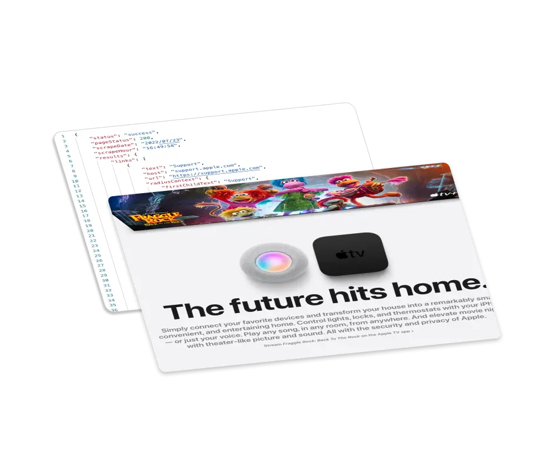

Easy and Powerful Web Scraping API
GetScrape is a high-level web scraping API that uses that focuses on extracting the information you need without the need of writing complex parsing rules.
Trusted by Companies Such As:



GetScrape is a high-level web scraping API that uses that focuses on extracting the information you need without the need of writing complex parsing rules.
Trusted by Companies Such As:
GetScrape allows you to extract different types of website data and control the outcome result with a simple GET Request.
GetScrape is a different kind of scraping API. Classic scraping APIs just provide a protocol to crawl websites and parse DOMs. GetScrape provides high-level functionality to extract precise data from websites without extra manipulation.
Simple and Secure GET API
Seamless Entity Parsing
Exclude, Filter, Skip or Drop Modifiers
GetScrape has dozens of cool features that help you to build the perfect programatic scraping workflows without extra data manipulation.
Entity Scraping
URL Radius Context
JS Evaluation
Webhooks
When you subscribe to our service, you get a single API key that
you can use to access both our APIs: GetScrape & GetScreenshot.
If you also have screenshot workloads we got you covered!
GetScrape offers simple plans that adapt to your needs and use cases. Anything from low volume scrape operations to complex high volume scraping workflows.
$5 /month
An entry level for protoypers and developers.
Most popular
$10 /month
Zapier access and higher volume for a great price.

$20 /month
The ultimate volume plan with ad-hoc implementation advice.
GetScrape is a web scraping API that is designed to be used by
developers who want to automate web scraping without having to
create scraing and parsing rules.
Traditional web scraping APIs only give you a way to access
the DOM but it's up to you to write the rules to extract the
data you need. GetScrape provided high-level strategies to
extract data from web pages and out-of-the-box it already
provides common use case parsing such as extracting links,
images, text, phone-numbers etc.
No, GetScrape is not designed to take screenshots. But your
API Key will also give your access to
GetScreenshot
, which is highly optimized for taking screenshots. All plans
gives you access to both APIs and credits are equivalent
(1 API Call = 1 Screenshot = 1 Scrape Operation).
One of the most common operations when scraping data from
websites is to extract URLs and their anchor text. However,
modern web development results in HTML documents that are very
complex and difficult to parse.
We provide a key in the results of link extraction operations
that shows the enclosing context of a link. This is called
Radius Context and it helps you to create a robust scraping
strategy with less code and error-prone rules.
When scraping a website the extracted data is usually not
ready for final use. In most cases the data needs to be
re-structured so it can be used and presented.
This usually not an issue if you have a backend system that
you can use to re-shape the data. However with tight systems
like Zapier this might not be an option or is too complex.
We provide API level data modifiers that help to shape the
data to your needs. For example, let's say you want to extract
a list of links but you need to discard the 5 first links
because they're irreleavant navigation links. You can simply
pass the number of links that you don't want in your result by
setting the drop_start parameter to 5.